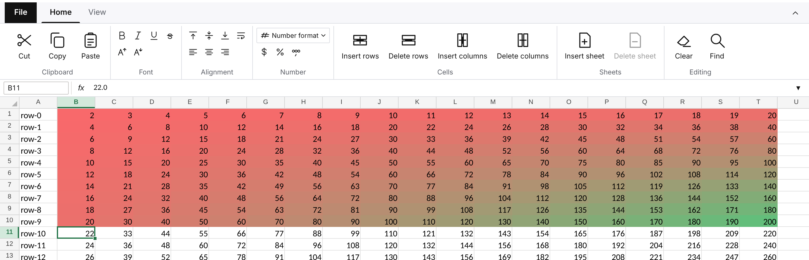
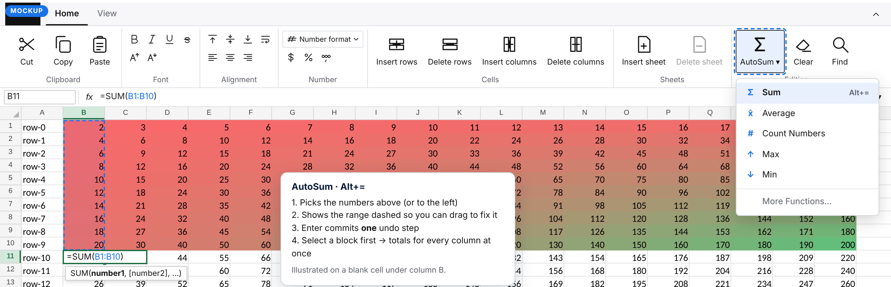
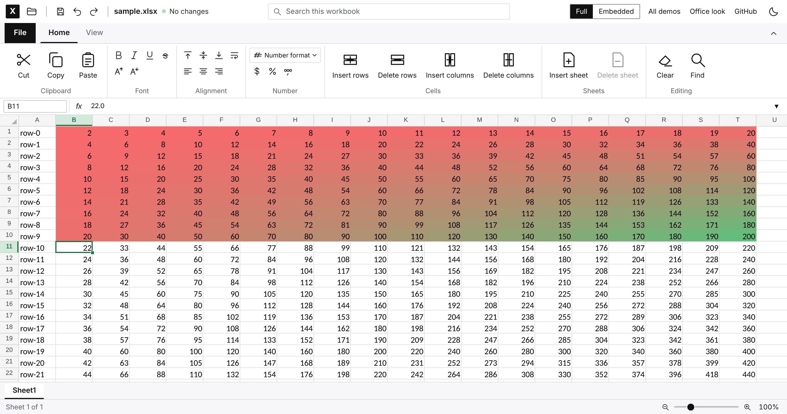
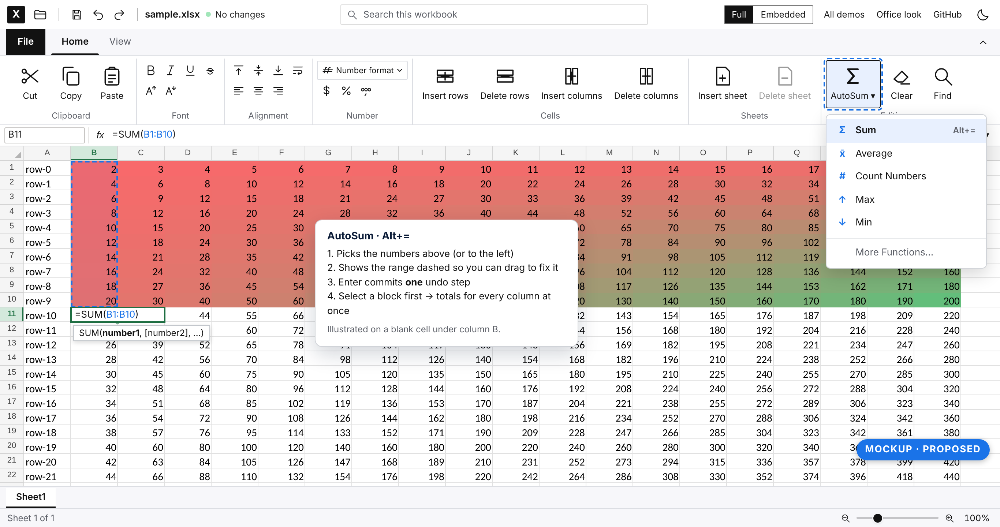

AutoSum (Σ, Alt+=): total a column in one click, with Average, Count, Max and Min
Approve: tap 👍 on the issue · Decline: tap 👎
Close-up of the change




Full screen


Today: the Editing group on Excel's Home tab has only Clear and Find. To total a column you must type =SUM( and the range by hand, and Alt+= does nothing.


Mockup: AutoSum (Σ) in Home > Editing with a menu of Sum, Average, Count Numbers, Max and Min. It proposes =SUM(B1:B10) and shows the range dashed so you can adjust it before pressing Enter.
Tap an image to open it full size.
Why
AutoSum is one of the most-used buttons in Excel and the quickest way to a total. Excel, Google Sheets (Σ Functions), OnlyOffice and Collabora all have it. Nitro already calculates SUM, AVERAGE, COUNT, MAX and MIN, so this is a small change that removes a lot of typing.
Definition of done
- Home > Editing shows AutoSum (Σ) with a split menu: Sum, Average, Count Numbers, Max, Min; Alt+= runs Sum.
- On a single cell it proposes the contiguous numbers above (else to the left) as =SUM(range), shows the range dashed, and Enter commits; Esc cancels.
- With a block selected (for example B1:E10), it writes totals in the row below (or column to the right) for every column in one undo step.
- Formulas save with <f> and cached <v> and reopen in Excel and LibreOffice with the same values.
- Playwright tests cover the range guess (blank stop, header skip, left fallback), each function, block totals, undo and save round-trip; Font, Alignment and Number groups stay at two rows; bundle-budget and all required checks green.
Approve: tap 👍 on the issue · Decline: tap 👎